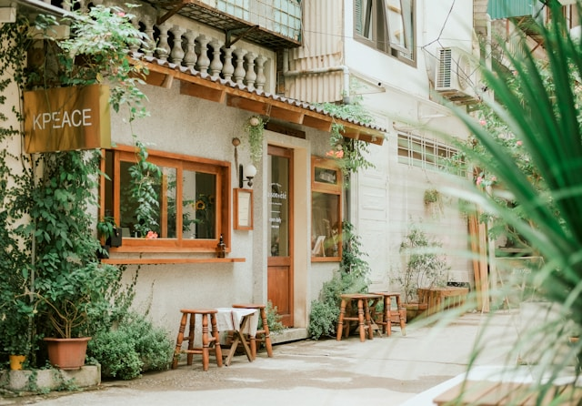

Helene Syre
@helenesyre · Apr 06, 2026
A new beginning!
Just moved to a new city and honestly? Best decision I've ever made. The energy here is something else entirely.
#new
#adventure

@helenesyre · Joined March 2026
Bibendum et nec ante dolor. Ac mattis consectetur enim eu amet aliquam adipiscing. Duis tristique faucibus imperdiet tincidunt vehicula.
helenesyre.no
318
Posts
1.2K
Followers
481
Following
72.4k
Likes
@helenesyre · Apr 06, 2026
Just moved to a new city and honestly? Best decision I've ever made. The energy here is something else entirely.
@helenesyre · Mar 28, 2026

Stumbled across a tiny place on Grünerløkka this morning. Perfect oat latte, good music, and a window seat with the best people-watching in the city. Already looking forward to going back.
@helenesyre · Mar 16, 2026
Stood in line for 40 minutes for takoyaki and would do it again without hesitation. Something about eating on a busy street corner just hits different.
@helenesyre · Mar 15, 2026
Switched to a film camera for the month. 36 shots, no previews, no deleting. It's completely changed how I see a scene before I shoot it.